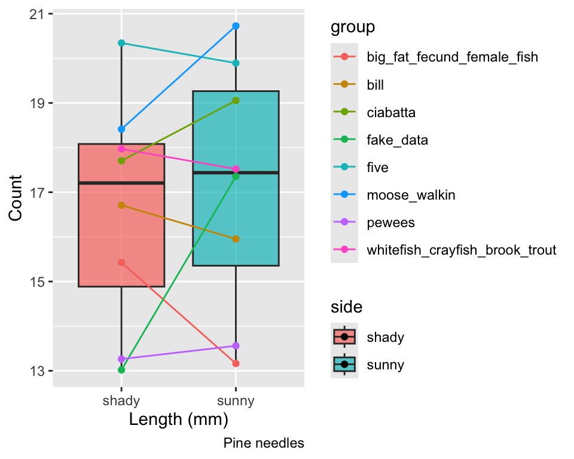

# A tibble: 2 × 5
side mean_length sd_length se_length count
<chr> <dbl> <dbl> <dbl> <int>
1 shady 17.6 2.51 0.886 8
2 sunny 16.2 2.64 0.934 8Lecture 05: Probability and Statistical Inference
Lecture 4: Review
- Introduction to histograms or frequency distributions
- Probability Distribution Functions (PDF)
- Z scores and T scores
- Tests of means using T-Tests
one sample
two sample

- Tests of means using T-Tests
- one sample - is the sample mean different from a hypothesized mean?
- two sample - are the sample means from two samples the same or different?
- for Two sample T-tests the df = n1+ n2 -2 = 8+8-2=14
The goals for today
- Statistical inference fundamentals
- Hypothesis testing principles
- T Distributions
- One sample T Test
- Two sample T Test
- Paired T Test
- Assumption tests

Lecture 5: Probability and Statistical Inference
The goals for today
- Statistical inference fundamentals
- Hypothesis testing principles
- T Distributions
- One sample T Test
- Two sample T Test
- Paired T Test

Lecture 5: One-tailed Questions
One-tailed questions: area of distribution left or (right) of a certain value for a one sample test
- n=8 (df=7) - 95% of the observations found left
- t= 1.895 (5% are outside)

 xxxx
xxxx
Lecture 5: Two-tailed Questions
Two-tailed questions refer to area between certain values
- n= 8 (df=7), 95% of the observations are between
- t=-2.365 and t=2.365 (2.5% are outside on each side)
- One tailed was t= 1.895 (5% are outside)


Lecture 5: Calculating CI Example
Let’s calculate CIs again:
Use two-sided test
- \(\text{CI} = \bar{y} \pm t \cdot \frac{s}{\sqrt{n}}\)
- 95% CI Sample A: = 17.6 ± 2.365 * (2.51/(8^0.5)) = +/- 2.098746
- The 95% CI is between 15.50 and 19.70
- “The 95% CI for the population mean from sample A is 17.6 ± 2.1
Activity: Define hypotheses and identify assumptions
H₀: μ = 15 (The mean needle length on shade side is 15mm)
H₁: μ ≠ 15 (The mean needle length on shade side is not 240mm)
Assumptions for t-test:
- Data is normally distributed
- Observations are independent
- No significant outliers
Shapiro-Wilk test
Shapiro-Wilk normality test
data: ps_df$length_mm
W = 0.92754, p-value = 0.2228Lecture 5: Hypothesis Testing
Hypothesis testing is a systematic way to evaluate research questions using data.
Key components:
- Null hypothesis (H₀): Typically assumes “no effect” or “no difference”
- Alternative hypothesis (Hₐ): The claim we’re trying to support
- Statistical test: Method for evaluating evidence against H₀
- P-value: Probability of observing our results (or more extreme) if H₀ is true
- Significance level (α): Threshold for rejecting H₀, typically 0.05
Decision rule: Reject H₀ if p-value < α

Lecture 5: Two Sample T-Tests Introduction
For example
- what is probability that population X is the same as population Y?
- How would you assess this question using what we learned?
- This is what we will do with the needle length again…

\(t = \frac{\bar{x}_1 - \bar{x}_2}{S_p\sqrt{\frac{1}{n_1} + \frac{1}{n_2}}}\)
where:
- x̄₁ and x̄₂: These represent the sample means of the two groups you’re comparing
- s²ₚ: This is the pooled variance, calculated as: s²ₚ = [(n₁ - 1)s₁² + (n₂ - 1)s₂²] / (n₁ + n₂ - 2), where s₁² and s₂² are the sample variances of the two groups.
- n₁ and n₂: These are the sample sizes of the two groups.
- √(1/n₁ + 1/n₂): This represents the pooled standard error.